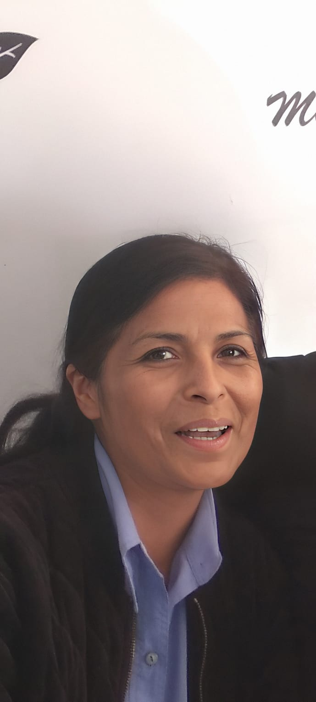
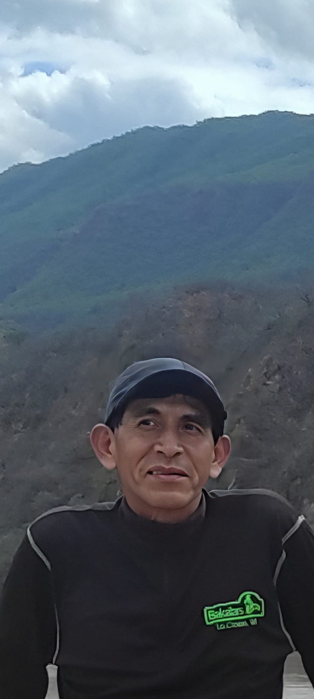

Nuestro Equipo
Detrás de cada sonrisa hay un equipo comprometido con transformar vidas. Conoce a las personas que hacen posible esta labor.
Misión
Transformar vidas mediante alimentación, educación, salud y emprendimiento, caminando junto a las comunidades más vulnerables de Bolivia.
Visión
Un Bolivia donde cada niño tenga oportunidades reales de desarrollo y donde las comunidades puedan construir su propio futuro con dignidad.
Personas que cambian vidas
"Comprometido con cada niño"
Carlos Mendoza
Director Ejecutivo
10 años de experiencia en proyectos sociales

"La educación es la clave"
María Elena García
Directora de Programas
Especialista en educación comunitaria
"Trabajamos juntos"
Roberto Tito
Coordinador de Comunidades
Líder comunitario Guaraní
"La salud es fundamental"
Dra. Ana López
Responsable de Salud
Médica comunitaria

"Los voluntarios son esenciales"
Pedro Fernández
Coordinador de Voluntarios
Gestión de voluntariado
"Transparencia en todo"
Lic. Carmen Rojas
Directora de Finanzas
Contadora pública

"Emprender para crecer"
Javier Flores
Coordinador de Emprendimiento
Economista social

"Contamos tu historia"
Sofia Vargas
Coordinadora de Comunicación
Comunicadora social
Voluntarios activos
personas que dedican su tiempo y conocimientos para hacer posible esta misión.
Lo que dicen nuestros equipos
"Trabajar con FAS me ha enseñado el verdadero significado de la solidaridad. Ver la sonrisa de los niños cada mañana vale más que cualquier pago."

Diego M.
Voluntario desde 2022
"Como miembro de la comunidad, veo el cambio que FAS ha traído. No solo nos dan alimentos, nos dan esperanza y herramientas para crecer."

Tomás
Líder comunitario